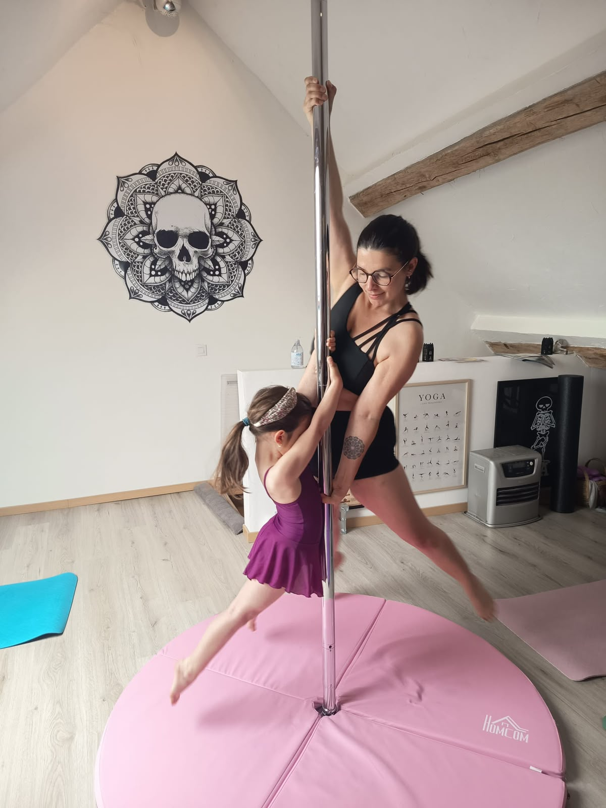
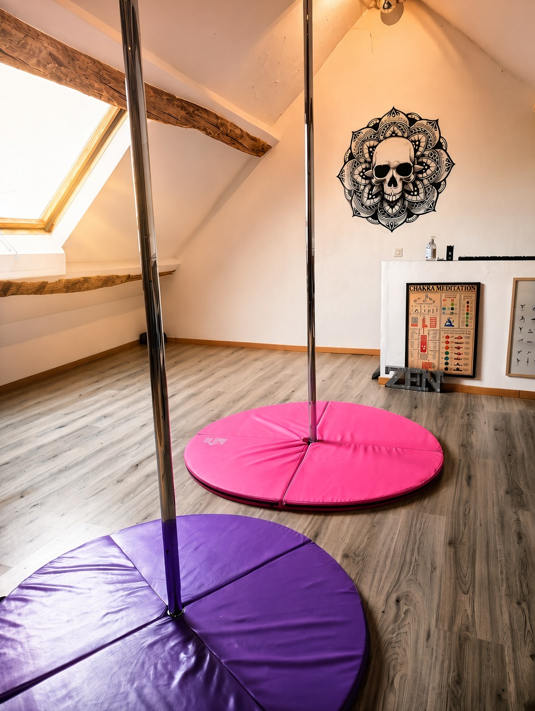
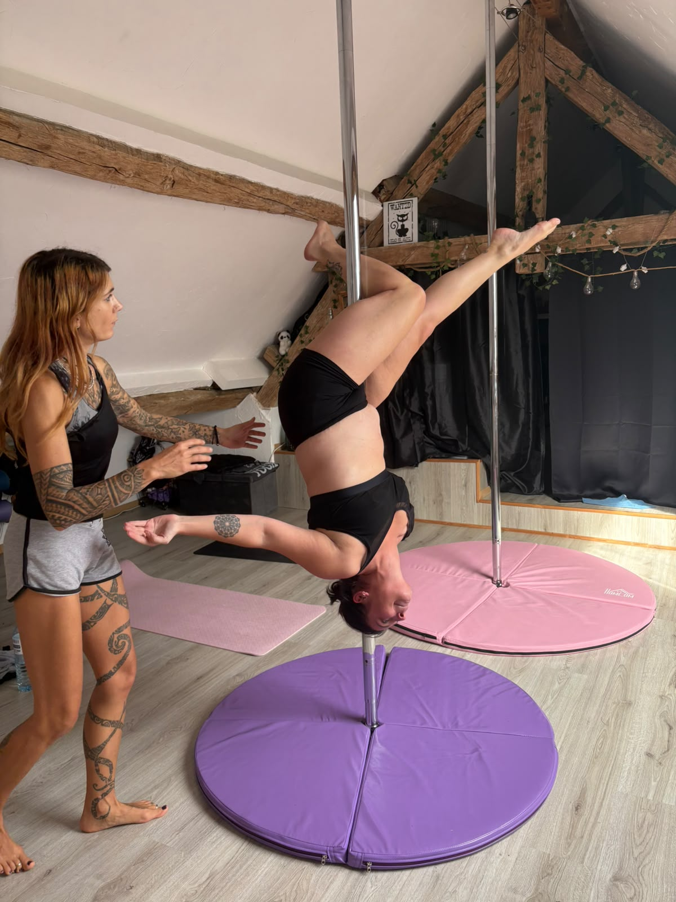
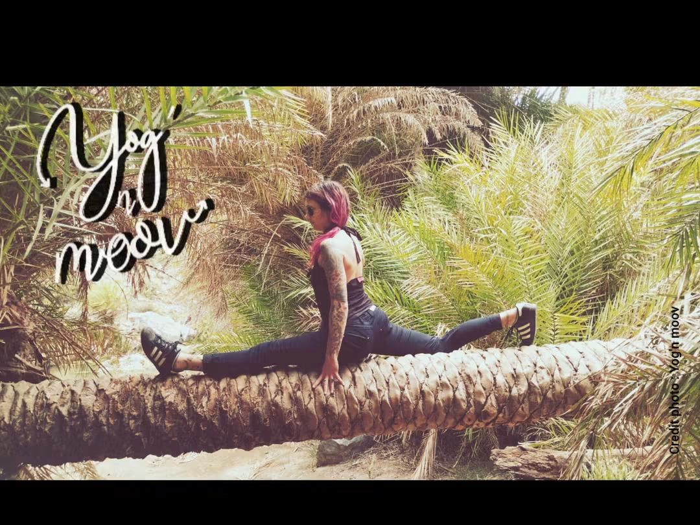
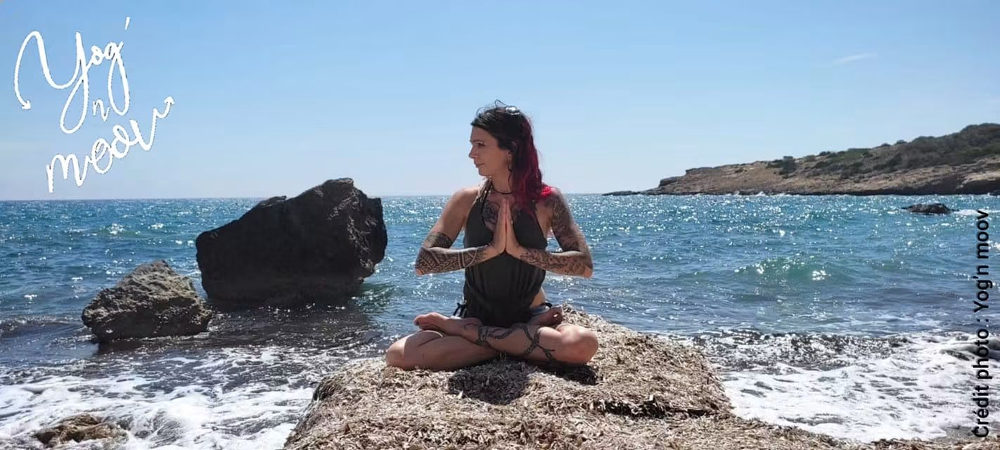

Un accompagnement personnalisé
Les petits groupes permettent de prendre le temps d'expliquer les mouvements, de progresser à son rythme et de profiter d'une ambiance chaleureuse.
Yog'n Moov
POLE DANCE
Bienvenue chez Yog'n Moov
À Soulières, près d'Épernay, Yog'n Moov est un espace intimiste où la pole dance, le yoga et le Pilates se rencontrent dans une ambiance conviviale, bienveillante et sans jugement.
On vient pour bouger, apprendre, progresser et surtout passer un bon moment, sans compétition ni comparaison.
Découvrez le studio
Un studio à taille humaine, avec un accompagnement personnalisé et des cours adaptés aux envies et aux possibilités de chacun.

Les petits groupes permettent de prendre le temps d'expliquer les mouvements, de progresser à son rythme et de profiter d'une ambiance chaleureuse.

Deux barres de pole dance et un nombre limité de participants pour apprendre, essayer et évoluer dans un cadre convivial.
L'esprit Yog'n Moov
Pas de compétition, pas de comparaison et pas besoin de correspondre à une image particulière. Chacun avance à son rythme, quel que soit son âge adulte, son genre ou son expérience sportive.
Il n'est pas nécessaire d'être déjà sportif, souple ou musclé pour commencer. L'essentiel est d'avoir envie d'essayer et de se faire plaisir.
Prendre confiance
La pole dance associe force, coordination, équilibre et expression corporelle. Chaque figure s'apprend progressivement : chaque étape compte.

Les mouvements sont adaptés aux possibilités de chacun. On prend le temps d'essayer, de recommencer et de savourer ses progrès.
On travaille, on découvre, on progresse… et on a aussi le droit de rire ! Le sport n'a pas besoin d'être sérieux tout le temps pour être bénéfique.
Le studio privilégie l'encouragement et l'entraide, sans pression de résultat ni comparaison physique.
Plusieurs façons de bouger
Yog'n Moov propose plusieurs pratiques pour bouger, renforcer le corps, améliorer sa mobilité ou simplement s'accorder un moment pour soi.

Les exercices de mobilité et de souplesse permettent de travailler progressivement l'amplitude des mouvements et de compléter les autres pratiques.

Le yoga, la respiration et la méditation invitent à ralentir, à écouter ses sensations et à retrouver un peu de calme dans le quotidien.
Planning et réservations
Le studio se situe à Soulières (51130), à environ 15 minutes d'Épernay.
Les places sont limitées pour conserver des cours à taille humaine. Contactez-moi pour connaître les prochaines disponibilités, poser vos questions ou parler de votre projet.